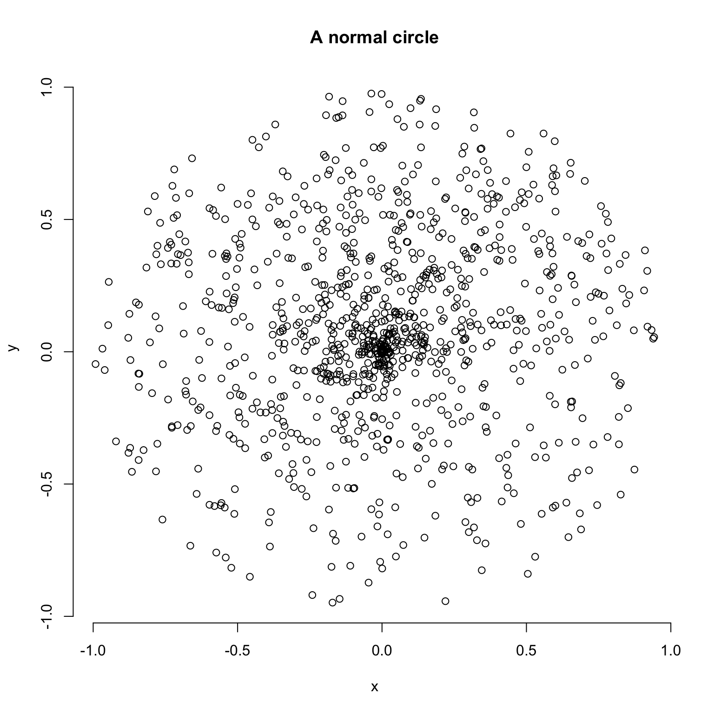
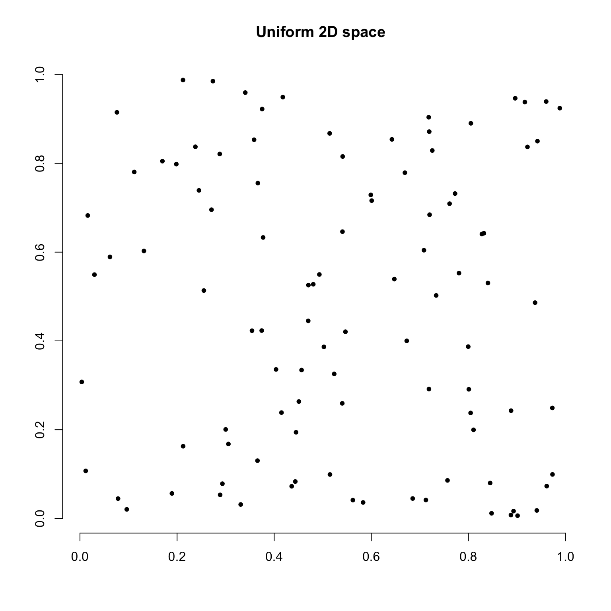

7 Palaeobiology demo: disparity-through-time and within groups
This demo aims to give quick overview of the dispRity package (v.1.2) for palaeobiology analyses of disparity, including disparity through time analyses.
This demo showcases a typical disparity-through-time analysis: we are going to test whether the disparity changed through time in a subset of eutherian mammals from the last 100 million years using a dataset from Beck and Lee (2014).
7.1 Before starting
7.1.1 The morphospace
In this example, we are going to use a subset of the data from Beck and Lee (2014). See the example data description for more details. Briefly, this dataset contains an ordinated matrix of 50 discrete characters from mammals (BeckLee_mat50), another matrix of the same 50 mammals and the estimated discrete data characters of their descendants (thus 50 + 49 rows, BeckLee_mat99), a dataframe containing the ages of each taxon in the dataset (BeckLee_ages) and finally a phylogenetic tree with the relationships among the 50 mammals (BeckLee_tree). The ordinated matrix will represent our full morphospace, i.e. all the mammalian morphologies that ever existed through time (for this dataset).
## Loading demo and the package data
library(dispRity)
## Setting the random seed for repeatability
set.seed(123)
## Loading the ordinated matrix/morphospace:
data(BeckLee_mat50)
head(BeckLee_mat50[,1:5])## [,1] [,2] [,3] [,4] [,5]
## Cimolestes -0.5319679 0.1117759259 0.09865194 -0.1933148 0.2035833
## Maelestes -0.4087147 0.0139690317 0.26268300 0.2297096 0.1310953
## Batodon -0.6923194 0.3308625215 -0.10175223 -0.1899656 0.1003108
## Bulaklestes -0.6802291 -0.0134872777 0.11018009 -0.4103588 0.4326298
## Daulestes -0.7386111 0.0009001369 0.12006449 -0.4978191 0.4741342
## Uchkudukodon -0.5105254 -0.2420633915 0.44170317 -0.1172972 0.3602273dim(BeckLee_mat50)## [1] 50 48## The morphospace contains 50 taxa and has 48 dimensions (or axes)
## Showing a list of first and last occurrences data for some fossils
data(BeckLee_ages)
head(BeckLee_ages)## FAD LAD
## Adapis 37.2 36.8
## Asioryctes 83.6 72.1
## Leptictis 33.9 33.3
## Miacis 49.0 46.7
## Mimotona 61.6 59.2
## Notharctus 50.2 47.0## Plotting a phylogeny
data(BeckLee_tree)
plot(BeckLee_tree, cex = 0.7)
axisPhylo(root = 140)
You can have an even nicer looking tree if you use the
strappackage!
if(!require(strap)) install.packages("strap")
strap::geoscalePhylo(BeckLee_tree, cex.tip = 0.7, cex.ts = 0.6)
7.2 A disparity-through-time analysis
7.2.1 Splitting the morphospace through time
One of the crucial steps in disparity-through-time analysis is to split the full morphospace into smaller time subsets that contain the total number of morphologies at certain points in time (time-slicing) or during certain periods in time (time-binning). Basically, the full morphospace represents the total number of morphologies across all time and will be greater than any of the time subsets of the morphospace.
The dispRity package provides a chrono.subsets function that allows users to split the morphospace into time slices (using method = continuous) or into time bins (using method = discrete). In this example, we are going to split the morphospace into five equal time bins of 20 million years long from 100 million years ago to the present. We will also provide to the function a table containing the first and last occurrences dates for some fossils to take into account that some fossils might occur in several of our different time bins.
## Creating the vector of time bins ages
(time_bins <- rev(seq(from = 0, to = 100, by = 20)))## [1] 100 80 60 40 20 0## Splitting the morphospace using the chrono.subsets function
(binned_morphospace <- chrono.subsets(data = BeckLee_mat50, tree = BeckLee_tree,
method = "discrete", time = time_bins, inc.nodes = FALSE,
FADLAD = BeckLee_ages))## ---- dispRity object ----
## 5 discrete time subsets for 50 elements:
## 100 - 80, 80 - 60, 60 - 40, 40 - 20, 20 - 0.The output object is a dispRity object (see more about that here. In brief, however, dispRity objects are lists of different elements (i.e. disparity results, morphospace time subsets, morphospace attributes, etc.) that display only a summary of the object when calling the object to avoiding filling the R console with superfluous output.
## Printing the class of the object
class(binned_morphospace)## [1] "dispRity"## Printing the content of the object
str(binned_morphospace)## List of 3
## $ matrix : num [1:50, 1:48] -0.532 -0.409 -0.692 -0.68 -0.739 ...
## ..- attr(*, "dimnames")=List of 2
## .. ..$ : chr [1:50] "Cimolestes" "Maelestes" "Batodon" "Bulaklestes" ...
## .. ..$ : NULL
## $ call :List of 1
## ..$ subsets: chr "discrete"
## $ subsets:List of 5
## ..$ 100 - 80:List of 1
## .. ..$ elements: int [1:8, 1] 5 4 6 8 43 10 11 42
## ..$ 80 - 60 :List of 1
## .. ..$ elements: int [1:15, 1] 7 8 9 1 2 3 12 13 14 44 ...
## ..$ 60 - 40 :List of 1
## .. ..$ elements: int [1:13, 1] 41 49 24 25 26 27 28 21 22 19 ...
## ..$ 40 - 20 :List of 1
## .. ..$ elements: int [1:6, 1] 15 39 40 35 23 47
## ..$ 20 - 0 :List of 1
## .. ..$ elements: int [1:10, 1] 36 37 38 32 33 34 50 48 29 30
## - attr(*, "class")= chr "dispRity"names(binned_morphospace)## [1] "matrix" "call" "subsets"## Printing the object as a dispRity class
binned_morphospace## ---- dispRity object ----
## 5 discrete time subsets for 50 elements:
## 100 - 80, 80 - 60, 60 - 40, 40 - 20, 20 - 0.These objects will gradual.splitly contain more information when completing the following steps in the disparity-through-time analysis.
7.2.2 Bootstrapping the data
Once we obtain our different time subsets, we can bootstrap and rarefy them (i.e. pseudo-replicating the data). The bootstrapping allows us to make each subset more robust to outliers and the rarefaction allows us to compare subsets with the same number of taxa to remove sampling biases (i.e. more taxa in one subset than the others). The boot.matrix function bootstraps the dispRity object and the rarefaction option within performs rarefaction.
## Bootstrapping each time subset 100 times (default)
(boot_bin_morphospace <- boot.matrix(binned_morphospace))## ---- dispRity object ----
## 5 discrete time subsets for 50 elements with 48 dimensions:
## 100 - 80, 80 - 60, 60 - 40, 40 - 20, 20 - 0.
## Data was bootstrapped 100 times (method:"full").## Getting the minimum number of rows (i.e. taxa) in the time subsets
min(size.subsets(boot_bin_morphospace))## [1] 6## Bootstrapping each time subset 100 times and rarefying them
(rare_bin_morphospace <- boot.matrix(binned_morphospace, bootstraps = 100,
rarefaction = 6))## ---- dispRity object ----
## 5 discrete time subsets for 50 elements with 48 dimensions:
## 100 - 80, 80 - 60, 60 - 40, 40 - 20, 20 - 0.
## Data was bootstrapped 100 times (method:"full") and rarefied to 6 elements.7.2.3 Calculating disparity
We can now calculate the disparity within each time subsets along with some confidence intervals generated by the pseudoreplication step above (bootstraps/rarefaction). Disparity can be calculated in many ways and this package allows users to come up with their own disparity metrics. For more details, please refer to the dispRity metric section.
In this example, we are going to calculate the spread of the data in each time subset by calculating disparity as the sum of the variance of each dimension of the morphospace in each time subset using the dispRity function. Thus, in this example, disparity is defined by the multi-dimensional variance of each time subset (i.e. the spread of the taxa within the morphospace). Note that this metric comes with a caveat (not solved here) since it ignores covariances among the dimensions of the morphospace. We use this here because it is a standard metric used in disparity-through-time analysis (Wills, Briggs, and Fortey 1994–4AD).
## Calculating disparity for the bootstrapped data
(boot_disparity <- dispRity(boot_bin_morphospace, metric = c(sum, variances)))## ---- dispRity object ----
## 5 discrete time subsets for 50 elements with 48 dimensions:
## 100 - 80, 80 - 60, 60 - 40, 40 - 20, 20 - 0.
## Data was bootstrapped 100 times (method:"full").
## Disparity was calculated as: c(sum, variances).## Calculating disparity for the rarefied data
(rare_disparity <- dispRity(rare_bin_morphospace, metric = c(sum, variances)))## ---- dispRity object ----
## 5 discrete time subsets for 50 elements with 48 dimensions:
## 100 - 80, 80 - 60, 60 - 40, 40 - 20, 20 - 0.
## Data was bootstrapped 100 times (method:"full") and rarefied to 6 elements.
## Disparity was calculated as: c(sum, variances).The dispRity function does not actually display the calculated disparity values but rather only the properties of the disparity object (size, subsets, metric, etc.). To display the actual calculated scores, we need to summarise the disparity object using the S3 method summary that is applied to a dispRity object (see ?summary.dispRity for more details).
As for any R package, you can refer to the help files for each individual function for more details.
## Summarising the disparity results
summary(boot_disparity)## subsets n obs bs.median 2.5% 25% 75% 97.5%
## 1 100 - 80 8 1.675 1.488 1.087 1.389 1.568 1.648
## 2 80 - 60 15 1.782 1.679 1.538 1.631 1.728 1.792
## 3 60 - 40 13 1.913 1.772 1.607 1.734 1.826 1.886
## 4 40 - 20 6 2.022 1.707 1.212 1.537 1.822 1.942
## 5 20 - 0 10 1.971 1.794 1.598 1.716 1.842 1.890summary(rare_disparity)## subsets n obs bs.median 2.5% 25% 75% 97.5%
## 1 100 - 80 8 1.675 1.484 1.194 1.400 1.547 1.636
## 2 100 - 80 6 NA 1.477 0.993 1.361 1.569 1.698
## 3 80 - 60 15 1.782 1.674 1.517 1.600 1.725 1.793
## 4 80 - 60 6 NA 1.655 1.299 1.532 1.754 1.882
## 5 60 - 40 13 1.913 1.767 1.601 1.714 1.829 1.861
## 6 60 - 40 6 NA 1.787 1.314 1.672 1.879 1.984
## 7 40 - 20 6 2.022 1.736 1.281 1.603 1.822 1.948
## 8 20 - 0 10 1.971 1.807 1.595 1.729 1.856 1.917
## 9 20 - 0 6 NA 1.790 1.435 1.718 1.873 1.995The summary.dispRity function comes with many options on which values to calculate (central tendency and quantiles) and on how many digits to display. Refer to the function’s manual for more details.
7.2.4 Plotting the results
It is sometimes easier to visualise the results in a plot than in a table. For that we can use the plot S3 function to plot the dispRity objects (see ?plot.dispRity for more details).
## Graphical options
quartz(width = 10, height = 5) ; par(mfrow = (c(1,2)), bty = "n")
## Plotting the bootstrapped and rarefied results
plot(boot_disparity, type = "continuous", main = "bootstrapped results")
plot(rare_disparity, type = "continuous", main = "rarefied results")
7.3 Testing differences
Finally, to draw some valid conclusions from these results, we can apply some statistical tests. We can test, for example, if mammalian disparity changed significantly through time over the last 100 million years. To do so, we can compare the means of each time-bin in a sequential manner to see whether the disparity in bin n is equal to the disparity in bin n+1, and whether this is in turn equal to the disparity in bin n+2, etc. Because our data is temporally autocorrelated (i.e. what happens in bin n+1 depends on what happened in bin n) and pseudoreplicated (i.e. each bootstrap draw creates non-independent time subsets because they are all based on the same time subsets), we apply a non-parametric mean comparison: the wilcox.test. Also, we need to apply a p-value correction (e.g. Bonferroni correction) to correct for multiple testing (see ?p.adjust for more details).
## Testing the differences between bins in the bootstrapped dataset.
test.dispRity(boot_disparity, test = wilcox.test, comparison = "sequential",
correction = "bonferroni")## [[1]]
## statistic: W
## 100 - 80 : 80 - 60 471
## 80 - 60 : 60 - 40 1562
## 60 - 40 : 40 - 20 6250
## 40 - 20 : 20 - 0 3725
##
## [[2]]
## p.value
## 100 - 80 : 80 - 60 7.427563e-28
## 80 - 60 : 60 - 40 1.798899e-16
## 60 - 40 : 40 - 20 9.061511e-03
## 40 - 20 : 20 - 0 7.379715e-03## Testing the differences between bins in the rarefied dataset.
test.dispRity(rare_disparity, test = wilcox.test, comparison = "sequential",
correction = "bonferroni")## [[1]]
## statistic: W
## 100 - 80 : 80 - 60 662
## 80 - 60 : 60 - 40 1814
## 60 - 40 : 40 - 20 5752
## 40 - 20 : 20 - 0 3621
##
## [[2]]
## p.value
## 100 - 80 : 80 - 60 1.214988e-25
## 80 - 60 : 60 - 40 2.823697e-14
## 60 - 40 : 40 - 20 2.653018e-01
## 40 - 20 : 20 - 0 3.026079e-03Here our results show significant changes in disparity through time between all time bins (all p-values < 0.05). However, when looking at the rarefied results, there is no significant difference between the time bins in the Palaeogene (60-40 to 40-20 Mya), suggesting that the differences detected in the first test might just be due to the differences in number of taxa sampled (13 or 6 taxa) in each time bin.
References
Beck, Robin M, and Michael S Lee. 2014. “Ancient Dates or Accelerated Rates? Morphological Clocks and the Antiquity of Placental Mammals.” Proceedings of the Royal Society B: Biological Sciences 281 (20141278): 1–10. doi:10.1098/rspb.2014.1278.
Wills, Matthew A., Derek E. G. Briggs, and Richard A. Fortey. 1994–4AD. “Disparity as an Evolutionary Index: A Comparison of Cambrian and Recent Arthropods.” Paleobiology 20 (2). Paleontological Society: 93–130. doi:10.2307/2401014.